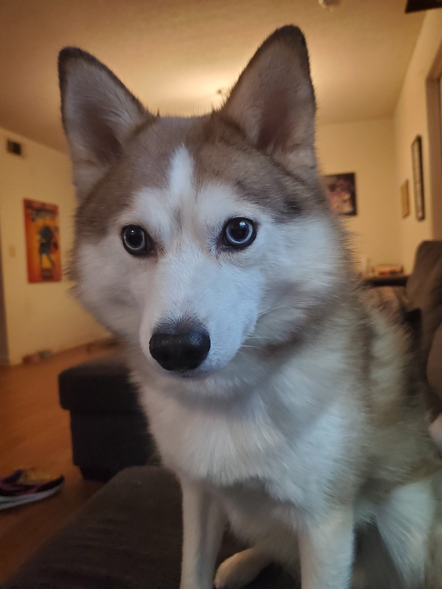

Hello friends and Falcon family! We are very proud and happy to share with you … the Falcon Insider! We will post articles on school events and news; we aim to add an overall fun vibe to the New Century student body. In collaboration with the Web Development Club, we’ve come up with this very website you’re viewing now! With a special thanks to them, this newspaper has a home that we hope all of you can enjoy.
Meet the members of our team!
- Izzy - Designer, Writing Editor
- Aiden - Photographer, Video Editor, Story Gatherer
- Sophia - Writer, Journalist
- April - Photographer, Story Gatherer
Personal Intros:
APRIL - Hi, my name is April and I am a junior at NCTHS. I enjoy playing musical instruments such as guitar, bass, drums, and piano and am the vocalist for a local hardcore band. I also love reading up on things I’m interested in, such as politics and economics.
IZZY - Some call her an enigma, many call her ‘ultimate boss friend’ she will be known to you as the master of the paper. She has spent countless sleepless nights training in harsh environments, including the depths of the earth, and the peaks of mountains to perfect her craft, most thought she’d never return from her increasingly deadly excursions, but the doubters’ tears were washed away in a river of fun and whimsy as their faces of fear turned to faces of glee as their favorite multifaceted and talented individual successfully returned unto them, unscathed from her seemingly fatal journey. All should be honored that such a figure could find its way into this school newspaper, so wipe your tears and rejoice, the master of the paper has returned once again.
AIDEN - Hi guys, my name is Aiden Tumacder, some call me Tumacder, and I am a senior at our school, NCTHS. I’ll mostly be in the background of the club, taking photos and gathering stories from different perspectives at any school event. All videos will also be edited by me, so if you have any feedback, please let me know. To showcase the type of photos you’ll be getting, here’s a photo of my dog:
SOPHIA - A poetical genius. A literary connoisseur. Hello friends! I’m Sophia, your main writer for this lovely newspaper :) I’m a senior at NCTHS, and I love reading and writing, mainly poetry! My favorite poet is Edgar Allan Poe, and you can probably find me at a Barnes & Noble or any library in Huntsville. I love music, and I play bass guitar! I’m not part of anything cool like April, but I enjoy strumming my silly little strings sometimes. My special interest as of right now is marine biology, and I hope to become a marine mammalogist in the future, specializing in seals or jellyfish. : ) Talk to me about aquatic life! I will never shut up!